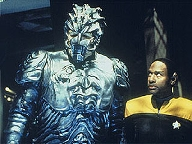
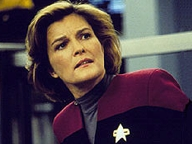
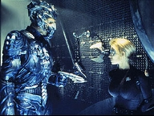
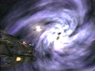
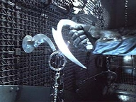
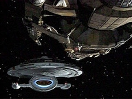

| MANCHETE
DO EPISDIO
Tripulao
recebe cartas de casa
Episdio
anterior | Prximo episdio Sinopse:
Data Estelar: 51501.4  Quando
o Comando da Frota Estelar manda uma transmisso para a USS Voyager, a mensagem
fica presa em uma das estaes Hirogen. Janeway imediatamente manda traar um
curso, mas os aliengenas se preparam para
intercept-la. No caminho, a Voyager encontra uma nave deriva com um
humanide morto a bordo. Eles transportam o corpo para a Enfermaria, para fazer
a autpsia. Descobrem que ele foi estripado. medida que a tripulao se
aproxima da estao, os sensores detectam foras gravimtricas mais fortes.
Aparentemente, a estrutura utiliza uma singularidade quntica - um buraco negro
- como fonte de energia.
Ao baixar o contedo enviado pela Frota, Janeway percebe
que se trata de cartas das famlias dos tripulantes. A notcia rapidamente se
espalha e todos se animam muito. Mas essas mensagens
contm boas e ms notcias. Tuvok descobre que av, porm Chakotay
avisado que todos os Maquis do Quadrante Alfa foram exterminados ou presos.
No
laboratrio de astromtricas, Seven percebe que a transmisso comea a se
degradar. Janeway convoca Tuvok a partir com a colega em misso avanada. Eles
saem em uma nave auxiliar para estabilizar o sinal, mas so capturados pelos
Hirogen.
Na Voyager, Janeway tambm lida com uma notcia ruim. O
noivo que deixou na Terra casou-se com outra mulher. Harry lhe chama, dizendo
que recebeu um chamado de socorro da nave auxiliar e que os sensores no acusam
a presena de Tuvok e Seven a bordo.

Os dois foram capturados e o Hirogen Alpha pretende fazer
com eles o mesmo que fez com aquele aliengena encontrado deriva. Janeway
imediatamente manda traar um curso de interceptao. Ao chegar s
coordenadas, a capit recusa o aviso do Alpha de
desconectar o link e partir sem seus tripulantes. A situao se complica
quando mais naves Hirogen entram no
alcance dos sensores.
Janeway nota que se conseguir ampliar os efeitos da
singularidade, aumentar a trao gravitacional do fenmeno, aprisionando os
inimigos. Quando as naves comeam a disparar contra a Voyager, o campo de
conteno se desestabiliza. A singularidade exposta e tudo sua volta
comea a ser sugado. Kim consegue transportar Tuvok e Seven em segurana pouco
antes de a capit ordenar uma manobra perigosa para liberar a Voyager. Eles
consegue escapar, mas, infelizmente, toda a rede de estaes pra de funconar, deixando a tripulao novamente sem um elo com o Quadrante Alfa.
Comentrios:
 O episdio da semana comea praticamente de onde "Message in a Bottle"
parou. Dessa forma, Voyager honra a continuidade - coisa rara e muito
positiva. Parece que a srie finalmente est engrenando, caminhando por seus
ps e desenvolvendo o seu contedo cannico prprio. E uma felicidade
notar que os produtores entenderam a necessidade de arcos. Isso cojncide com um
momento muito especial e indito: a Frota estabelece contato pela primeira vez,
utilizando a mesma rede aliengena de telecomunicaes atravs da qual
Janeway mandou o Doutor para o Quadrante Alfa. Como a tripulao reagir s
notcias boas - e outras "nem to boas" - da Terra?
O ponto alto de "Hunters" justamente o
fato de as cartas de casa no trazerem o que eles querem ouvir. O roteiro
no fornece ao telespectador respostas fceis. Todos sentem pela primeira vez
a passagem do tempo. "Enquanto estivemos aqui, as coisas mudaram muito por
l. Ser que encontraremos o nosso Quadrante Alfa, aquele que deixamos
h quatro anos? Ser que devemos querer voltar". Com certeza,
no. Uma guerra preocupante assola a Federao. Os Dominions, uma raa do
Quadrante Gama, se alinharam aos Cardassianos e causam grandes estragos. Os
Maquis foram todos exterminados ou presos. O que acontecer se a Frota perder a
guerra? Como reagiro os tripulantes da Voyager ao saber que os nicos Maquis
restantes esto a bordo? Merece destaque a cena em que Chakotay d as
notcias a B'Elanna e ela se enfurece. A engenheira sabe que aquilo no est
certo e quer fazer algum pagar. Sente a "culpa do sobrevivente" e a
raiva acentuada pelo fato de estar a 60.000 anos-luz de distncia e no poder fazer
nada a respeito. Momento marcante e dramtico. Infelizmente, no mostrado
como os outros Maquis encaram a notcia.
Embora a deciso de eliminar os rebeldes tenha partido de
Deep Space Nine, as repercusses foram muito positivas para Voyager,
que, ironicamente, sempre relegou esse aspecto primordial de sua premissa ao
esquecimento. Os roteiristas no mais tero que lidar com a questo (muito
embora nunca o tenham feito de forma consistente ou convincente).
 Mas voltemos a "Hunters". As notcias
no so difceis apenas para a tripulao da Voyager. Imagine (porque isso
no foi mostrado) como a Frota e todos os parentes encararam a descoberta de
que a nave no fora destruda, mas est to longe, mas to longe de casa,
que at ela chegar - se conseguir chegar - tero se passado dcadas. De que
forma a Frota pode ajudar? No aspecto pessoal, com certeza - e isso Chakotay
especula -, muita gente encontrou algum tipo de resoluo e procurou superar a
perda. Agora, sabendo que seus amados esto vivos...
o caso da prpria Janeway. Seu noivo lhe escreve, mas
com um propsito bem definido. "Kathy, sofri quando a Voyager se
perdeu, mas segui em frente, me casei e estou feliz. Desse mato no sai mais
coelho. No precisa voltar". Balde de gua fria na auto-estima de
qualquer um. S que no bem o contedo da mensagem que incomoda a solitria
capit. A questo que ela o vinha usando h quatro anos como rede de
segurana para impedir de se envolver com outra pessoa na Voyager. Como
ser para ela agora que est livre, solta e desimpedida?
Aqui, sente-se que os produtores ainda no definiram o
que o destino reservar a ela. Em "Resolutions",
do final do segundo ano, Janeway e Chakotay se aproximaram bastante, a ponto de
rolar "um clima". Mas traam parmetros e estabelecem limites. Em "Coda",
da temporada seguinte, a intimidade, ainda que exclusivamente fraternal,
aparente. O f levado a acreditar em "Scorpion"
que o quarto ano trar um romance. "Hunters" continua a
induzir essa impresso, sobretudo em seu ltimo dilogo, no qual Chakotay
"sentencia": "Voc no tem mais essa rede de segurana".
bvio que, independentemente da cumplicidade entre os dois, o comandante
seria a sada mais lgica de um romance para a capit, inclusive tendo-se e
conta que os protocolos da Frota a impedem de se relacionar intimamente com
oficiais de baixa patente. esperar para ver. Nada fica claro, mas uma
carta na manga para os roteiristas.
 Outro ponto forte do segmento a sua habilidade em
integrar os diferentes personagens principais dentro da mesma premissa maior.
Raramente isso acontece na srie. Paris no se entusiasma com as cartas, pois
encontrou um norte para sua vida na Voyager. Veio a bordo como mercenrio sem
princpios e tornou-se um legtimo oficial. Para que quereria voltar
priso na Nova Zelndia? A apatia inicial de Seven convence, assim como a sua
constatao posterior de que pode ter parentes na Terra. Harry desgasta-se ao
longo de todo o episdio, ansioso por uma mensagem de seus pais e temeroso de
no a receber. Na verdade, um comportamento bastante previsvel. Pode parecer
impresso, mas at Tuvok, ao ler a carta de sua esposa, acompanhado por uma
trilha sonora que denota emoo. Enfim, todo mundo se integra trama.
A apreciao final, da "sub-trama", diz
respeito aos Hirogens, que tambm interceptam a transmisso da Frota e
identificam a Voyager como presa em
potencial. Com eles, o Quadrante Delta volta a se
diferenciar, exibindo seus perigos. Talvez a nica vez em que os roteiristas
conseguiram passar essa sensao com xito foi com a apario dos Borgs e da Espcie
8472. Mas nem d para se estender muito aqui, pois a participao dos
aliengenas rpida.
 S no d para entender por que a destruio da
estao desabilitou toda a rede de telecomunicaes, uma
infra-estrutura que se estende por milhares de anos-luz. No deixa de ser
irnico que, mais uma vez, Janeway destri o elo com o Quadrante Alfa -
e, no processo, faz inimigos mortais para a tripulao. Qualquer alferes com
vagas tendncias parania acharia que a prpria capit sabota as
possibilidades de a Voyager voltar para casa. O que acharo os telespectadores?
A crtica final vai para a carta que Paris receberia. Como B'Elanna no
conseguiu salv-la se ficou metade do episdio baixando-a - antes mesmo da
mensagem de Harry, que chegou depois? Nunca saberemos...
Citaes:
Kim - "Maybe they've figured out a
way to get us home."
("Talvez eles tenham descoberto um jeito de nos levar para casa.")
Paris - "How can the get us home from sixty thousand light years away?"
("Como eles podem nos levar para casa de sessenta mil anos-luz de
distncia?")
Kim - "Who knows what technological advances Starfleet has come up
with since we've been gone? They might have developed a whole new way of
travelling through space."
("Quem sabe que avanos tecnolgicos a Frota criou desde que sumimos?
Eles podem ter desenvolvido uma forma totalmente nova de viajar pelo espao.")
Tuvok - "Since it was technology that brought us to the Delta quadrant
in the first place, it's a reasonable assumption technology could bring us
back again."
("J que foi tecnologia que nos trouxe para o Quadrante Delta em
primeiro lugar, razovel dizer que a tecnologia pode os levar de volta.") Seven
- "I have gone as long as two hundred hours without regenerating."
("Eu j passei at duzentas horas sem me regenerar.")
Doutor - "That was when you were a Borg. You seem to forget you're a
good deal more human now."
("Isso foi quando voc era Borg. Parece se esquecer de que bem mais humana
agora.")
Seven - "I assure you, I have not forgotten."
("Eu lhe asseguro. No esqueci.") Doutor - "I've
accomplished things no EMH ever has. In fact, most likely I'll become an
object of intense study and discussion. Possibly even veneration."
("J realizei coisas que nenhum HEM fez. Na verdade, provvel que eu
me torne objeto de intensos estudos e discusses. Possivelmente at
venerao.") Neelix - "I
can tell you I've never seen the crew this excited."
("Posso lhe dizer que nunca vi a tripulao to animada.")
Janeway - "This is the closest they've come to their families in
almost four years."
("Isso o mais prximo que eles chegaram de suas famlias em quase
quatro anos.") Torres - "Don't!
Don't try to console me! I don't want to be comforted! Those were our friends,
good people willing to put their lives on the line for something they believed
in. And now you're telling me that they are gone, that they are slaughtered."
("No! No tente me consolar! No quero ser consolada! Aqueles eram
nossos amigos, pessoas boas, dispostas a arriscar suas vidas por algo em que
acreditavam. E agora est me dizendo que eles se foram, que foram massacrados.")
Chakotay - "Those are the risks we all took. We all knew where it
could lead."
("Eram os riscos que todos assumimos. Todos sabamos como podia acabar.")
Torres - "It's not right and you know it! I will make someone pay! I
swear I will... if we ever get back."
("No est certo e voc sabe disso! Vou fazer algum pagar por isso!
Juro que vou... se algum dia conseguirmos voltar.") Torres - "I've
taken over for her. Disappointed?"
("Assumi por ela. Desapontado?")
Kim - "Of course not. Would you stop that? I've told you, there's
nothing between us."
("Claro que no. Quer parar com isso? J lhe disse que no h nada
entre ns.")
Torres - "I know there's nothing between you. It's purely a one-way
attraction."
("Sei que no h nada entre vocs. uma atrao puramente unilateral.")
Kim - "Very funny"
("Muito engraada.") Seven
- "Commander, am I correct in assuming that Vulcans are incapable of
lying?"
("Comandante, estou correta em pensar que os Vulcanos so incapazes de
mentir?")
Tuvok - "We are capable of telling lies. However, I have never found
it prudent or necessary to do so."
("Somos capazes de dizer mentiras. No entanto, nunca achei prudente ou
necessrio faz-lo.") Chakotay
- "You haven't mentioned your letter. Who was it from?"
("Voc no mencionou a sua carta. De quem era?")
Janeway - "It was from Mark, the man I was engaged to. He told me
about the litter of puppies my dog had, how he found homes for them, how
devastated he was when Voyager was lost, how he held out hopes we were alive
longer than most people did until he realised that he was clinging to a
fantasy. So he began living his life again. Meeting people, letting go of the
past. About four months ago he married a woman who works with him. He's very
happy."
("Era de Mark, o homem de quem estava noiva. Ele me falou dos filhotinhos
que minha cadela teve, de como encontrou lares para eles. De como ficou
devastado quando a Voyager desapareceu. De como manteve as esperanas de que
estvamos vivos por mais tempo que muita gente, at que percebeu que estava
entrando numa fantasia. Ele comeou a viver sua vida de novo. Conhecer
pessoas, deixar o passado. H cerca de quatro meses casou-se com uma mulher
que trabalha com ele. Est muito feliz.")
Chakotay - "How do you feel about that?"
("Como se sente sobre isso?")
Janeway - "Well, I knew he'd eventually move on with his life. But
there was such a finality to that letter."
("Bom, eu sabia que por fim ele seguiria com sua vida. Mas havia uma
finalidade to clara naquela carta.") Janeway - "Open
the anti-matter injectors to one hundred twenty percent."
("Libere os injetores de anti-matria para cento e vinte por cento!")
Kim - "Captain, that could breach the core!"
("Capit, isso pode romper o ncleo!")
Janeway - "So will that black hole. Now just do it!"
("Aquele buraco negro tambm. Faa!") Trivia:
 Tiny Ron interpretou Idrin, no episdio anterior de Voyager.
Tiny Ron interpretou Idrin, no episdio anterior de Voyager.
O fim dos Maquis, que Chakotay relata a B'Elanna, apareceu no episdio "Blaze
of Glory", de Deep Space Nine.
Ficha
tcnica: Direo de
David Livingston
Adaptao por Jeri Taylor
Exibido em 11/02/1998
Produo: 083 Elenco: Kate
Mulgrew como Kathryn Janeway
Robert Beltran como
Chakotay
Roxann Biggs-Dawson como B'Elanna Torres
Robert
Duncan McNeill como Tom Paris
Ethan Phillips como
Neelix
Robert Picardo como Doutor
Tim Russ
como Tuvok
Jeri Ryan como Seven of Nine
Garrett Wang como Harry Kim Elenco
convidado:
Tiny Ron como Hirogen Alfa
Roger Morrissey como Hirogen Beta
Episdio
anterior | Prximo episdio
|